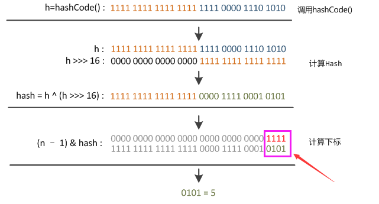

源码解释
在 Java 的 HashMap 源码中，put() 和 get() 方法会首先获取 key 的哈希值。
1 | public V put(K key, V value) { |
而这个 hash(key) 方法并不是简单地直接返回对象 key 的 hashCode()。
1 | static final int hash(Object key) { |
从上面代码可以看到 key 的哈希值的计算方法：取对象 key 的原始哈希值，低16位与高16位做异或得出最终的哈希值。
h >>> 16，表示无符号右移16位，高位补0，任何数跟0异或都是其本身，因此key的hash值高16位不变。
为什么要这么做呢？
原理说明
这个与HashMap中table下标的计算有关。
1 | n = table.length; |
因为，table 的长度都是2的幂，因此 index 仅与 hash 值的低 n 位有关，hash 值的高位都被与操作置为0了。
假设 table.length = 2^4 = 16。

由上图可以看到，只有 hash 值的低4位参与了运算。
这样做很容易产生碰撞。设计者权衡了speed, utility, quality，将高16位与低16位异或来减少这种影响。设计者考虑到现在的 hashCode 分布的已经很不错了，而且当发生较大碰撞时也用树形存储降低了冲突。仅仅异或一下，既减少了系统的开销，也不会造成的因为高位没有参与下标的计算（table 长度比较小时），从而引起的碰撞。
参考源码中的注释：
1 | /** |
有的地方也称这段代码为”扰动函数“，并做了做实验对比了添加”扰动函数“之后冲突减少的比例（达10%）。参考 https://www.zhihu.com/question/20733617/answer/111577937
–